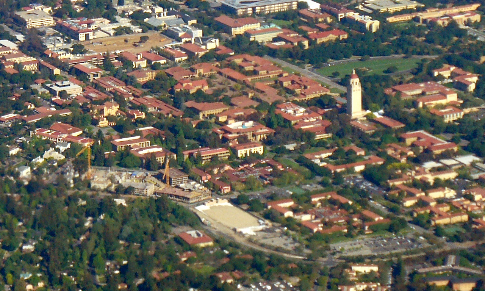
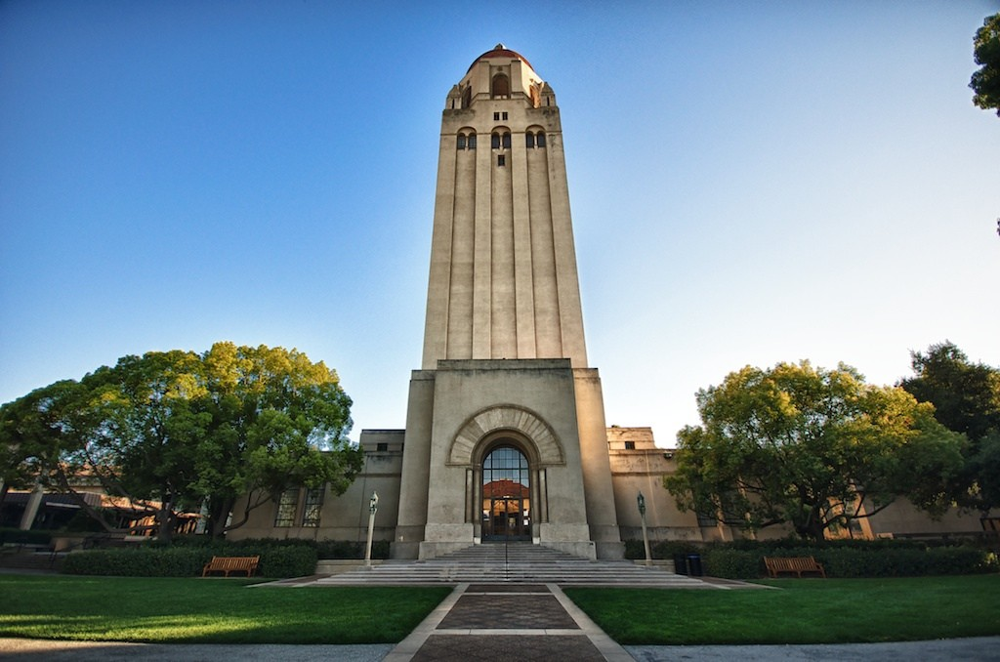
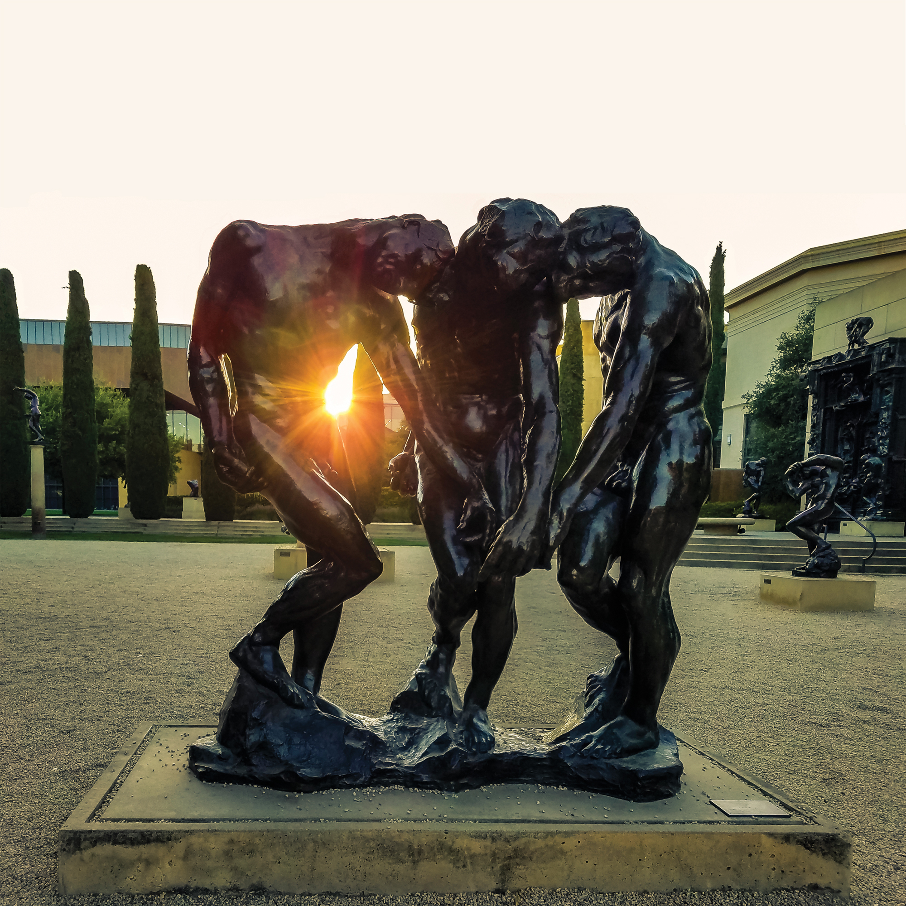
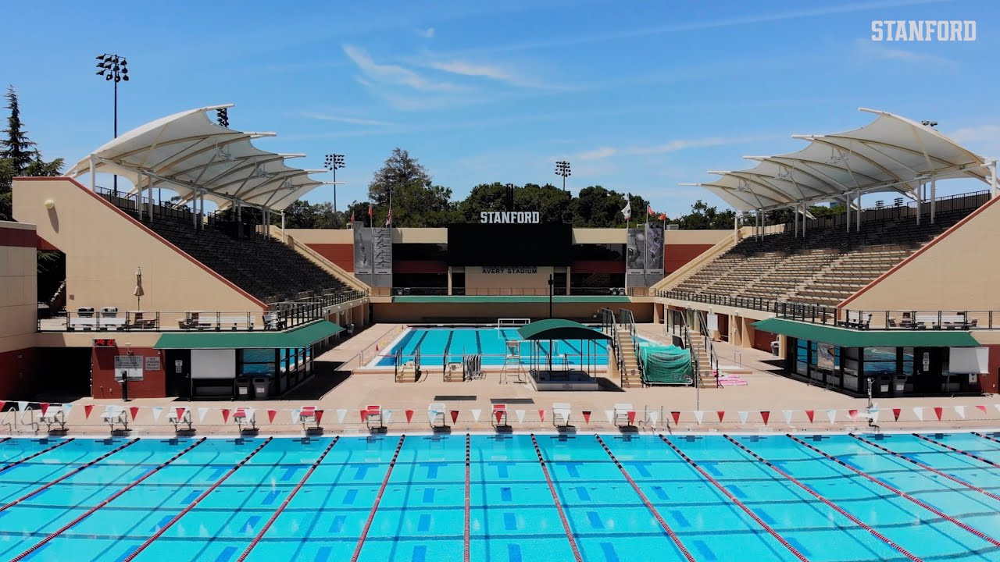

Nuestro campus
El campus de la Universidad Stanford funciona como una pequeña ciudad de más de 3.300 hectáreas en Silicon Valley, California, y cuenta con edificios históricos, centros de investigación y espacios naturales.


Arquitectura y puntos emblemáticos
Main Quad: El corazón original del campus, famoso por sus pasarelas con arcadas de piedra arenisca y techos de tejas rojas.
Memorial Church: Una iglesia icónica con hermosos mosaicos venecianos ubicada en el centro del cuadrilátero principal.
Torre Hoover: Una torre de 87 metros que ofrece un mirador con vistas panorámicas de todo el campus y el Valle de Santa Clara.
Palm Drive y The Oval: La gran avenida de entrada flanqueada por palmeras que conduce al núcleo universitario.
Cultura y arte
Cantor Arts Center: Un museo gratuito con 24 galerías que abarcan 5.000 años de historia del arte.
Cantor Arts Center: Aloja una de las colecciones más grandes de obras de Auguste Rodin fuera de París, incluyendo El pensador.
Bing Concert Hall: Una moderna sala de conciertos de alta acústica para presentaciones en vivo.


Instalaciones académicas y vida diaria
Escuelas y laboratorios: Incluye facultades de renombre mundial en ingeniería, medicina, negocios y derecho, además de cientos de edificios de alta tecnología y bibliotecas.
Áreas deportivas y recreativas: Cuenta con estadios de fútbol americano, canchas de baloncesto, piscinas olímpicas y un campo de golf histórico.
Naturaleza y espacios al aire libre: Grandes áreas verdes, jardines y el popular sendero de excursión The Dish